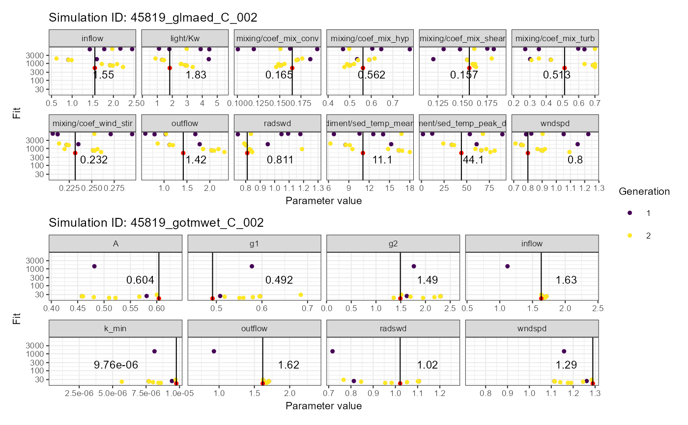
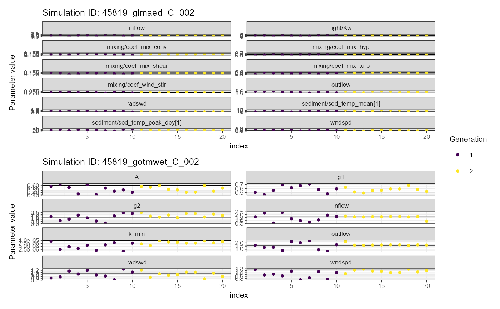
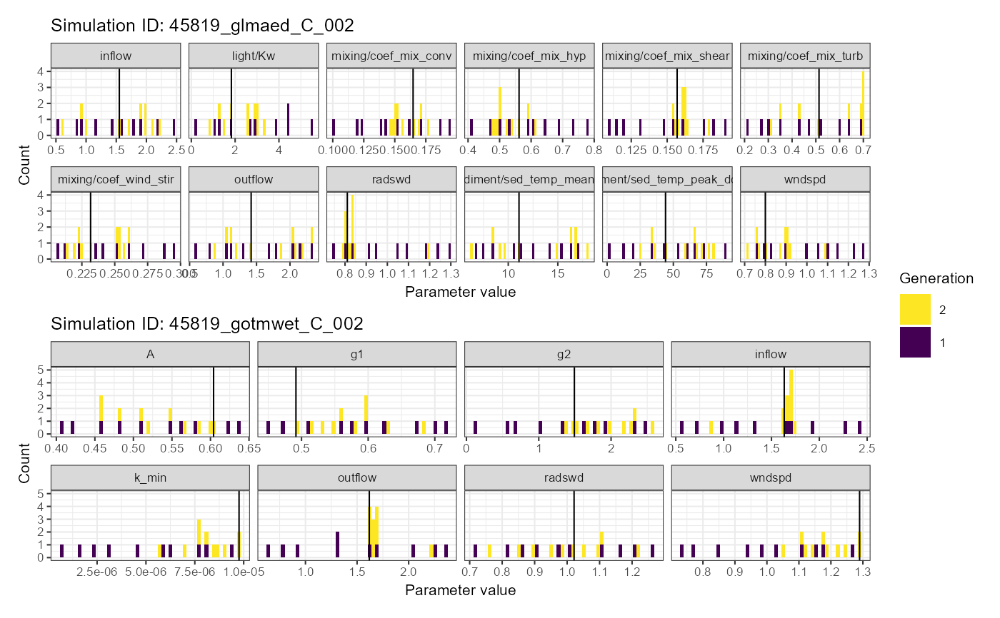

Plot calibration results
Usage
plot_calib(
calib,
na_value,
fit_col = "fit",
nrow = 2,
base_size = 8,
return_pars = FALSE,
log_y = TRUE
)Arguments
- calib
dataframe; output from
read_calib- na_value
A numeric value which corresponds to the NA value used in the calibration.
- fit_col
character; name of column containing fit values. Default is
"fit".- nrow
integer; number of rows in plot
- base_size
numeric; base size for theme
- return_pars
logical; return parameter values
- log_y
logical; use log scale on y-axis. Default is
TRUE.
Examples
aeme_file <- system.file("extdata/aeme.rds", package = "AEME")
aeme <- readRDS(aeme_file)
model_controls <- AEME::get_model_controls()
model <- c("glm_aed", "gotm_wet")
path <- "aeme"
aeme <- AEME::build_aeme(aeme = aeme, model = model, path = path,
model_controls = model_controls, ext_elev = 5) |>
AEME::run_aeme()
#> ℹ Using observed water level
#> ℹ No missing values in observed water level. Using observed water level
#> ℹ Correcting water balance using estimated outflows (method = 2).
#> ℹ Calculating lake level using lake depth and a sinisoidal function.
#> ℹ Building GLM-AED for lake wainamu
#> ℹ Building GOTM-WET model for lake wainamu
#> ✔ GOTM YAML validation completed - no issues detected.
#> ✔ GLM nml validation completed - no issues detected.
#> ℹ Running models... (Have you tried parallelizing?) [2026-03-03 00:43:04]
#> → GLM-AED running... [2026-03-03 00:43:04]
#> ✔ GLM-AED run successful! [2026-03-03 00:43:04]
#> → GOTM-WET running... [2026-03-03 00:43:04]
#> ✔ GOTM-WET run successful! [2026-03-03 00:43:04]
#> ✔ Model run complete! [2026-03-03 00:43:04]
#> ! The following variables are not available in model gotm_wet: RAD_extc
#> ! The following variables are not available in model gotm_wet: RAD_extc
data("aeme_parameters", package = "AEME")
param <- aeme_parameters
# Function to calculate fitness
nse <- function(df) {
# Calculate Nash-Sutcliffe Efficiency
nse <- 1 - (sum((df$obs - df$model)^2) / sum((df$obs - mean(df$obs))^2))
-1 * nse
}
FUN_list <- list(HYD_temp = nse, LKE_lvlwtr = nse)
ctrl <- create_control(method = "calib", NP = 10, itermax = 20, ncore = 2,
parallel = TRUE, file_type = "db",
file_name = "results.db")
vars_sim <- c("HYD_temp", "LKE_lvlwtr")
weights <- c("HYD_temp" = 1, "LKE_lvlwtr" = 1)
# Calibrate AEME model
sim_id <- calib_aeme(aeme = aeme, model = model, path = path,
param = param, FUN_list = FUN_list, ctrl = ctrl,
vars_sim = vars_sim, weights = weights)
#> ℹ Variables not found: `LKE_lvlwtr`.
#> Adding them to model_controls.
#> ! The following parameters have the same value, min,
#> and max and will not be updated during calibration: "sediment/n_zones"
#> Warning: No parameters in 'param' for gotm_wet.
#> ℹ Extracting indices for "glm_aed" modelled variables [2026-03-03 00:43:06]
#> ✔ Indices extracted for "glm_aed" modelled variables [2026-03-03 00:43:07]
#> ℹ Using 2 cores for parallel calibration for "glm_aed".
#> → Starting generation 1/2, 10 members. [2026-03-03 00:43:08]
#> Parameter summary for generation 1:
#> light/Kw MET_wndspd MET_radswd mixing/coef_mix_conv
#> mean 2.833 1.0060 1.0100 0.14920
#> median 2.802 1.0250 0.9999 0.14770
#> sd 1.723 0.1853 0.1900 0.02999
#> mixing/coef_wind_stir mixing/coef_mix_shear mixing/coef_mix_turb
#> mean 0.24830 0.14860 0.4487
#> median 0.24620 0.15110 0.4513
#> sd 0.03049 0.02906 0.1630
#> mixing/coef_mix_hyp sediment/sed_temp_mean[1]
#> mean 0.5956 11.980
#> median 0.5977 11.930
#> sd 0.1180 3.688
#> sediment/sed_temp_peak_doy[1] outflow inflow
#> mean 45.31 1.4820 1.4780
#> median 48.29 1.4990 1.5130
#> sd 28.53 0.5972 0.6208
#> ✔ Completed generation 1/2
#> for "glm_aed". [2026-03-03 00:43:24]
#> Best fit: 780 (sd: 4057.9) Parameters: [ 2.88, 0.896, 0.834, 0.152, 0.251,
#> 0.162, 0.688, 0.503, 16.4, 66.1, 2.04, and 1.92 ]
#> Writing output for generation 1 to results.db with sim ID: "45819_glmaed_C_002"
#> [2026-03-03 00:43:24]
#> ℹ Survival rate: 0.8
#> → Starting generation 2/2, 10 members. [2026-03-03 00:43:24]
#> Parameter summary for generation 2:
#> light/Kw MET_wndspd MET_radswd mixing/coef_mix_conv
#> mean 2.2840 0.8614 0.8569 0.15840
#> median 2.5960 0.8816 0.8306 0.15360
#> sd 0.8464 0.1099 0.1182 0.01101
#> mixing/coef_wind_stir mixing/coef_mix_shear mixing/coef_mix_turb
#> mean 0.23860 0.161900 0.5732
#> median 0.24150 0.161800 0.6619
#> sd 0.01786 0.007036 0.1572
#> mixing/coef_mix_hyp sediment/sed_temp_mean[1]
#> mean 0.52870 12.740
#> median 0.51130 12.940
#> sd 0.04675 4.262
#> sediment/sed_temp_peak_doy[1] outflow inflow
#> mean 55.98 1.6130 1.5990
#> median 62.84 1.6370 1.8200
#> sd 19.94 0.5414 0.5632
#> Writing output for generation 2 to results.db with sim ID: "45819_glmaed_C_002"
#> [2026-03-03 00:43:30]
#> ✔ Completed generation 2/2
#> for "glm_aed". [2026-03-03 00:43:30]
#> Best fit: 537 (sd: 2026.5)
#> ℹ Survival rate: 1
#> ℹ Extracting indices for "gotm_wet" modelled variables [2026-03-03 00:43:30]
#> ✔ Indices extracted for "gotm_wet" modelled variables [2026-03-03 00:43:31]
#> ℹ Using 2 cores for parallel calibration for "gotm_wet".
#> → Starting generation 1/2, 10 members. [2026-03-03 00:43:32]
#> Parameter summary for generation 1:
#> turbulence/turb_param/k_min light_extinction/A/constant_value
#> mean 4.998e-06 0.52290
#> median 5.266e-06 0.52930
#> sd 2.961e-06 0.08031
#> light_extinction/g1/constant_value light_extinction/g2/constant_value
#> mean 0.58720 1.3820
#> median 0.58700 1.4620
#> sd 0.09252 0.7771
#> MET_wndspd MET_radswd outflow inflow
#> mean 1.0020 1.0020 1.4950 1.4700
#> median 1.0070 0.9902 1.4680 1.4840
#> sd 0.1802 0.1802 0.6081 0.6355
#> ✔ Completed generation 1/2
#> for "gotm_wet". [2026-03-03 00:43:49]
#> Best fit: 23.8 (sd: 16770) Parameters: [ 7.7e-06, 0.458, 0.596, 2.31, 1.11,
#> 1.11, 1.71, and 1.71 ]
#> Writing output for generation 1 to results.db with sim ID:
#> "45819_gotmwet_C_002" [2026-03-03 00:43:49]
#> ℹ Survival rate: 0.6
#> → Starting generation 2/2, 10 members. [2026-03-03 00:43:50]
#> Parameter summary for generation 2:
#> turbulence/turb_param/k_min light_extinction/A/constant_value
#> mean 8.162e-06 0.53340
#> median 8.223e-06 0.53480
#> sd 1.235e-06 0.05573
#> light_extinction/g1/constant_value light_extinction/g2/constant_value
#> mean 0.57380 1.9180
#> median 0.56960 1.8780
#> sd 0.05674 0.4103
#> MET_wndspd MET_radswd outflow inflow
#> mean 1.18400 0.9944 1.7200 1.6020
#> median 1.18300 1.0020 1.6710 1.6810
#> sd 0.07776 0.1358 0.1801 0.2578
#> Writing output for generation 2 to results.db with sim ID:
#> "45819_gotmwet_C_002" [2026-03-03 00:43:59]
#> ✔ Completed generation 2/2
#> for "gotm_wet". [2026-03-03 00:44:00]
#> Best fit: 17.7 (sd: 3.6206)
#> ℹ Survival rate: 0.8
# Read calibration output
calib <- read_calib(sim_id = sim_id, ctrl = ctrl)
plist <- plot_calib(calib = calib)
# Dotty plot
plist$dotty
#> Warning: Removed 24 rows containing missing values or values outside the scale range
#> (`geom_point()`).
#> Warning: Removed 48 rows containing missing values or values outside the scale range
#> (`geom_point()`).

# Convergence plot
plist$convergence

# Histogram plot
plist$histogram
